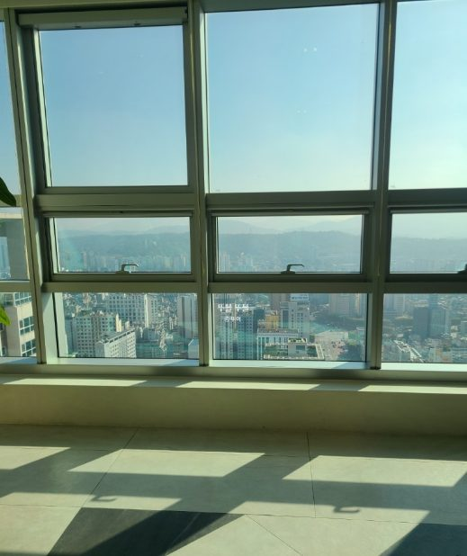
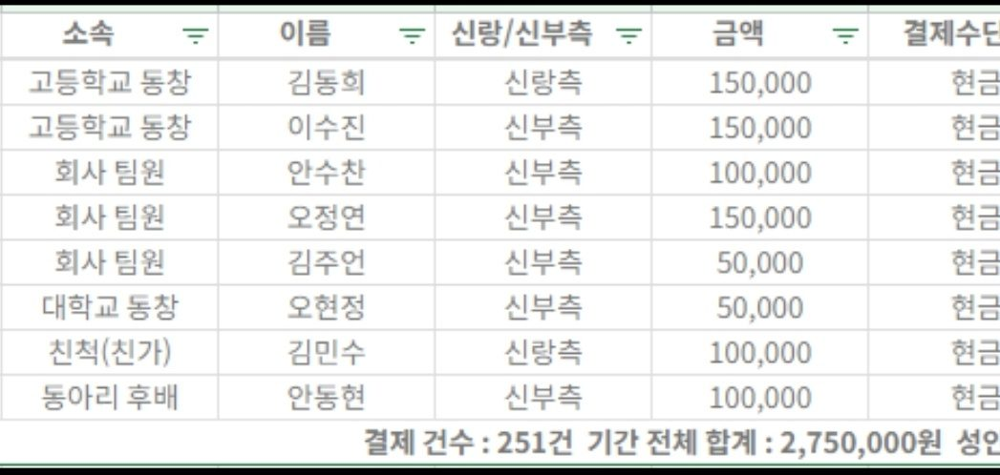

강동 루벨 웨딩홀 후기
축 · 의 · 금 · 키 · 오 · 스 · 크

안녕하세요, 마음 키오스크입니다.
오늘 소개해 드릴 축의금 키오스크 후기는 서울 강동에 위치한 루벨 웨딩홀입니다. 🙂
키오스크 신청은 루벨 웨딩홀뿐만 아니라 서울·경기·인천 웨딩홀 모두 가능합니다.
이번 예식 정보
- 키오스크 기능 : 현금 전용, 식권·주차권 발급, 축의금 정산
- 기타 제공사항 : 안내 직원 1~2명 상주
키오스크 설치
키오스크 설치·운영·회수는 운영 직원이 진행합니다. 생소할 수 있는 하객분들을 위해 입간판으로 안내를 도왔습니다.

키오스크 운영
오전 11시 결혼식의 하객분들은 일찍 오시는 것 같습니다. 한 커플분께서 바로 이용해 주셨는데요.
많은 신랑·신부님이 문의하시는 내용 중 “어르신들이 잘 사용하실 수 있을까?”에 대한 질문이 있었습니다. 축의금 키오스크는 스마트폰 앱과 유사한 인터페이스에 큰 버튼, 직관적인 화면 구성으로 누구나 쉽게 사용할 수 있습니다.
아래 사진처럼 어르신들도 수월하게 축의금을 전달하셨습니다. 헷갈리는 부분은 상주하는 직원이 설명해 드리고 있습니다.


축의금 자동 정산
시간이 훌쩍 지나 어느덧 결혼식이 종료되었습니다. 키오스크를 개봉하여 현금 액수를 확인했습니다. (혼주 동반)
하객별 축의금액을 엑셀로 정리해서 신부님께 전달드렸습니다. 엑셀 데이터는 신랑·신부 구분하여 전달도 가능하고, 위와 같이 전체 금액으로도 전달 가능합니다. 🙂

이용해 주신 신랑·신부님의 결혼을 다시 한번 진심으로 축하드립니다. 소중한 순간에 저희가 조금이나마 도움이 된 것 같아 큰 보람을 느꼈습니다.
저희 마음 키오스크는 신랑·신부님의 한 번뿐인 결혼식을 편리하게, 여유 있게, 품격 있게 만들어 드리겠습니다.
사용 영상은 아래 링크에서 확인해 주세요.
▶ YouTube 사용 영상 보기
진행했던 결혼식장 List
- 강동 루벨
- 엘레에나 호텔
- 월드컵컨벤
- 주안 CN웨딩홀
- JW메리어트 (반포)
- 토브헤세드
- 인천주안 천년웨딩홀
- 판교 W스퀘어 컨벤션
- 밀리토피아호텔웨딩센터